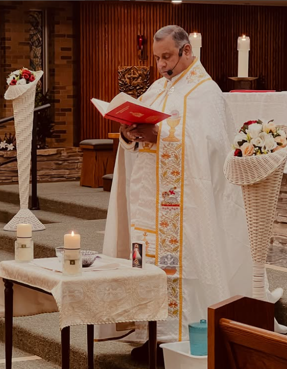

A Message from Our Pastor

Leading with Faith and Heart
Welcome to our spiritual home. It is with immense joy that I greet you through our new website. Our church is more than just a building; it is a vibrant community of believers united by faith, hope, and love.
Here at Lourdes Matha, we strive to create a welcoming atmosphere where everyone feels valued and can grow in their relationship with God. Whether you are a lifelong member or a first-time visitor, know that you are part of our family.
This space is dedicated to sharing updates, reflections, and prayers. I invite you to explore the site and connect with our community. My door is always open for prayer and guidance.
In His Service,
Pastor [Pastor's Name]